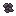
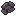
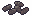

Everything you need to know about how rat breeding, survival, and genetics actually work under the hood. We pulled the real math straight from the game code and sanity-checked it against community testing so you can run your ranch with zero guesswork.
| Trait Name | Base | Hard Limits | Realistic Max | Player Records [Min / Max] | What Keeps It In Check |
|---|---|---|---|---|---|
| Growth Rate | 1.0 | [0.01, ∞) |
~2.4 – 2.6 | 0.54 / 3.34 | Climbs steadily with selective breeding, but quickly dilutes if you pair an elite rat with an average one. |
| Hunger Rate | 65.0 | [0.01, ∞) |
~18 – 25 (Floor) | 23.67 / 102.0 | Lower is better. Step sizes shrink as the number drops, meaning progress naturally slows near the bottom. |
| Longevity | 1.0 | [0.01, ∞) |
~2.2 – 2.5 | 0.53 / 1.86 | Pushes back old-age death rolls. Elder weight loss always starts on Day 11 regardless; past Day 14, Longevity only decides how long the shrinking continues before weight freezes (Step 08). |
| Immunity | 30.0 | [0.01, ∞) |
50 / 85 | 15.61 / 65.03 | Natural sickness completely stops rolling at 50. Above 50 only speeds up recovery and prion defense. |
| Fertility | 50.0 | [0.01, ∞) |
85 – 100 | 15.0% / 100.0% | Direct percentage roll. Any value above 100 provides zero in-game benefit. |
| Litter Size | 3.0 | [0.01, ∞) |
~4.5 – 5.2 | 1.66 / 7.11 | Expressed only by females. Males quietly carry the gene, which can secretly dilute your bloodline. |
| Max Health | 100.0 | [0.01, ∞) |
? | 49.83 / 200.2 | A real 7th mutable gene, registered in the same AnimalSpecies.cctor gene list as the others — not a fixed constant. (The 500 cap you see is for hunger). |
Longevity isn't an execution date—it's an alarm clock for when dangerous nightly dice rolls begin:
Every night past Acrit is an independent Bernoulli trial — survival probability decays geometrically, never resetting and never reaching a guaranteed-death floor. The "14" lives as a 6th entry in the same per-species array that holds the 5 growth-stage boundaries (growthStages[5]), not a separate hardcoded literal — the master nightly dispatcher reads that exact array slot, multiplies it by Longevity, and compares against age before rolling the flat 75%.
Before the threshold age, your rat has a 0% chance of dying from old age. Once it reaches that day, it must survive a flat 75% death roll every night:
FoodMaxValue × 0.75 ≤ HungerToday) — relative to each food's own value, not a single fixed hunger number like "425." A small snack still gets eaten well past the point a big meal would be rejected.
MaxHunger × 0.25 at birth — 125 out of the 500 reservoir, not the full tank. Litters need feeding sooner than their stomach size suggests.
Two independent Bernoulli trials, not one addition: Stage 1 decides whether ΔP fires at all (at the same rate as its own payout — 15% chance of +0.15, 35% chance of +0.35), then Stage 2 uses that result plus the flat overcrowding term as the probability of a second, separate roll that actually flips the Sick flag.



Immunity 50 is a hard cutoff, not a smooth asymptote — the linear term would still be 0.05 at exactly 50 if it kept going, but the branch condition zeroes it out entirely at that point.
While 50 protects against random illness, extra points keep scaling:
HusbandryHelper — CheckImmunityDisease, CheckHygiene, and the nightly damage/recovery tick HandleDisease — reads only the affected rat's own Immunity and never looks at another rat or a cage-mate count. If cage-to-cage contagion is real, it isn't happening here; it would have to live in unrelated inventory/container code we haven't searched.
Regen has no floor of its own — only the death check stops the slide, and only at exactly 0. A cure rolled tonight still lets tonight's −25% Max Health land; it only stops tomorrow's damage.
ModifyHealth (RVA 0x8CC9C0) doesn't write health directly; it fires an event with {CurrentHealth, Delta, MaxHealth}:
Checked once per rat per night. A rat processed later in the same pass already sees whatever earlier roommates' checks (and any new litters or feces) produced moments before.
Runs at Step 06 (after feeding and health updates, but before fertility, growth, and mating). Any rat killed by crowding gets no weight gain and cannot mate.
CanMate rejects dead, starving, pregnant, and neutered rats outright, then calls IsMature, which returns growthStages[2] ≤ CurrentAge — index 2 is Adolescence's start day (3). Fail any one of those five and the rat never reaches the fertility formula at all; there's no partial credit. Fertility eligibility opens exactly at Adolescence, not before.
Four independent linear deductions stack multiplicatively against the same base before conception probability is even rolled (see the Weak Link Rule for what happens next). The "up to 3 attempts" cap is itself read from a per-species tag (ANIMAL_MAX_MATING_COUNT_TAG, default 3) rather than a hardcoded literal — it isn't one of the seven mutable/inheritable genes, so it doesn't drift through breeding, but it's stored the same way the other species baselines are.
Step 07 locks in each rat's effective fertility for tonight's mating in Step 09.
min(Fertility_A, Fertility_B), not the average. If your stud male has 90% fertility but is paired with a sick 15% female, your odds are stuck at 15%. Keep both partners healthy!
TryMate says otherwise — the exact line is if (fertB ≤ fertA) fertA = fertB;, keeping whichever rat's effective fertility is lower and rolling against that alone. It's min, not average.
| Stage | Night the rat turns… | Daily Weight Gain (× Growth Rate) | Weight Checkpoints |
|---|---|---|---|
| Infant | born at age 0 | No growth night; starts at 5g | 5g @ Day 0 |
| Juvenile | 1 – 2 | +75g / night | 50g @ Day 1 → 200g @ Day 3 |
| Adolescent | 3 – 4 | +75g / night | 200g @ Day 3 → 350g @ Day 5 |
| Adult | 5 – 10 | +16.7g / night (shows as +17) | 350g @ Day 5 → 450g @ Day 11 |
| Elder | 11 – 13 | −16.7g / night (shows as −17) | 450g @ Day 11 → 400g @ Day 14 |
| Past Day 14 | 14+ | 0 (weight frozen) — unless Longevity > 1, see below | 400g @ Day 14 |
Both arrays are read straight out of the game's metadata: D and K are the two int arrays AnimalSpecies.cctor loads into the species (fields +0x28 and +0x30), and GetAnimalCurrentWeightChange divides the weight gap between checkpoints by the day gap to get the nightly rate. The 400-calorie threshold, the 0.5 hunger coefficient and the 0.5 starvation multiplier come from the same function's raw disassembly, and the floor comes from GrowAnimal. Everything in the Butchery block is decompiled and exact as well, including the sick-weight 0.75× multiplier and the ceiling-division trick for SmallMorsels.
CheckMate shuffles the eligible, non-pregnant, opposite-sex roommates and walks that list once, trying a different partner on each of the (up to) 3 attempts — not 3 rolls against the same rat. With fewer than 3 eligible partners available, the extra attempts just go unused that night. Attempts are also mutual, not one-sided: the targeted female spends one of her own nightly attempts just by being on the receiving end, whether she initiated anything or not, and every rat's counter resets to 0 at the start of each night before mating runs — it's strictly a per-night budget. Keeping a few spare females in the pen ensures a male's full nightly budget gets used, since a female becomes ineligible the moment she's pregnant.
The miscarriage gate in HandlePregnancyProgress checks the exact same starving flag HandleStarvation sets — it's the same starvation, not a separate check. Gestation duration comes from a per-species field whose baseline is 3.0, the same constant reused for the mutation wide-roll multiplier in Section 10. The litter-variance roll in GiveBirth is a direct Random.Range(−1, 2) call, which in Unity's min-inclusive/max-exclusive convention returns exactly {−1, 0, +1} with equal probability.
Mutate() and the father's passes down unchanged. ApplyInheritedGenetics calls MutateAllele on the mother-derived and father-derived alleles independently — identical treatment, identical 15% roll each. Both parents' contributions can mutate.
Fourteen independent evaluations of 𝑀 per birth — one per allele, seven stats, two alleles each. That seventh stat is Max Health: AnimalSpecies.cctor registers it in the identical gene-definition list as the other six, with baseline 100.0, so it runs through this exact same allele/mutation pipeline rather than being a fixed constant. Resistance is measured purely against the species baseline B, never against parental lineage, which is exactly why inbreeding carries zero mechanical penalty here.
Even at extreme stats, the absolute jump size never shrinks to zero:
Because the step size never vanishes, strict elite pairs can climb indefinitely in code.
Derived by taking the expectation of 𝑀(V,B)'s update over Mroll, W, and u (which drops out since E[u]=0), then simplifying D·sgn(B−V) to (B−V)÷B. Baseline isn't just "where mutations happen to cluster" — it's a provably attracting equilibrium in expectation, which is exactly why species stats don't drift away from their base value on their own.
The 37.5% figure is the asymptotic (D→∞) frequency — the same derivation in 11.1 shows the split is a plain 50/50 near Baseline, where Pullback is negligible. It only sharpens to 37.5/62.5 once a stat has drifted far out, and stays there rather than sharpening further.
Careful reading required here: this is not a second attractor — 11.1 already proved V*=B is the only stable fixed point, and Pullback is strictly positive below Baseline, actively resisting the slide. The 0.01 floor is a hard max(0.01, ...) clamp, only reached if enough negative rolls compound faster than Pullback corrects for it. Absolute step size shrinks near the floor simply because the step scales with V itself, which is already small there — not because the underlying Magnitude term is shrinking (it stays roughly bounded, unlike the D→∞ regime in 11.2).
Because ΔV∞ never shrinks to zero (11.2), there is no code-level ceiling — the step size at extreme deviation stays a constant fraction of Baseline forever. The ~2.4–2.6× wall is what happens when a −0.10 dilution hit meets a single mutation's max +0.015 phenotype gain: dilution wins more often than not (needing the 0.316% dual-allele-positive case, or several generations, to catch up), but a colony that only ever breeds within its current elite tier sidesteps the dilution term entirely and is not mathematically blocked from climbing further — just much slower.
CheckCannibalism only ever fires when the meat's species-of-origin matches the eater's own species — feed a rat any other species' meat and this entire mechanic never triggers, Prion flag or not. Only rat-on-rat feeding is at risk. Within that: meat already carrying the Prion flag infects 100% of the time, ignoring Immunity completely; clean rat meat instead rolls 1 - Immunity/100.
The -20% penalty uses the exact same coefficient as Section 04's spontaneous-sickness formula, applied here to Growth, Immunity, and Longevity simultaneously rather than gating a sickness roll. The carcass-flag propagation into every cut is handled directly in OnButcher. The penalty is stored as a modifier on the infected rat (ModBonusPercent adds −0.2 to each stat's _BONUS_PERCENT tag, and the game reads every stat as (1 + bonus%) × allele mean), so its alleles are never touched. It is permanent for that rat, but its pups inherit the original, clean alleles — the damage does not pass down the bloodline.
Not every point of stat growth is worth the same. Some stats scale linearly forever, some hit a hard wall, and one only protects value instead of adding it. Here's what each of the seven mutable traits is actually doing, pulled straight from the formulas above — not a guess.
Hunger Rate has no entry here because it never appears on the right-hand side of a payout formula — it only appears in Hdrain = max(0, H − ghunger), which determines how long you stay above the 400/200 thresholds that gate Growth and Fertility. Its value is entirely borrowed from whichever of those two stats it's currently protecting. Max Health has no entry either: it never appears in the Growth, Fertility, or Litter formulas at all — its only appearance anywhere is as the multiplier base in the Regen/SicknessDamage terms above (Step 05). Reducing infection odds is Immunity's job, not Health's.